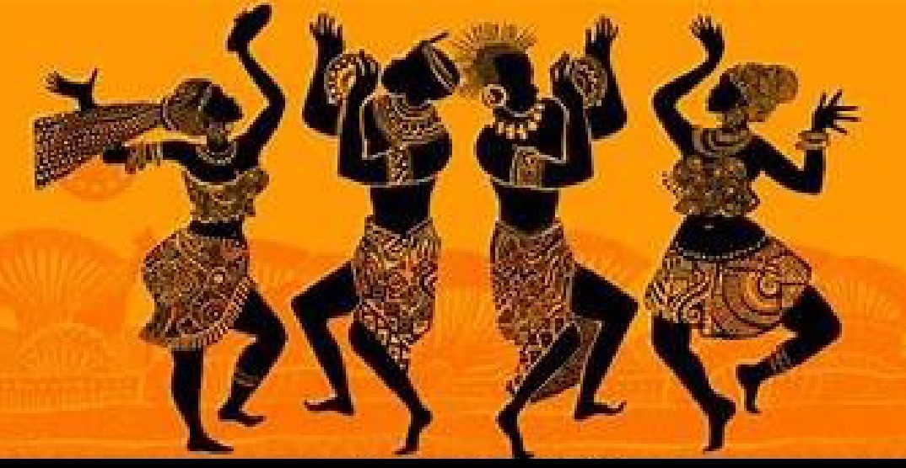
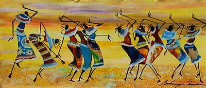
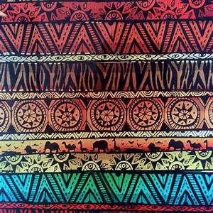

 The culture of African is varied and manifold, consisting of a mixture of countries with various tribes that each have their own unique characteristics from the continent of Africa. It is a product of the diverse populations that today inhabit the continent of Africa and the African Diaspora. African culture is expressed in its arts and crafts, folklore and religious, clothing, cuisine, music and languages. Expressions of culture are abundant within Africa, with large amounts of cultural diversity being found not only across different countries but also within single countries. Even though African cultures are widely diverse, they are also, when closely studied, seen to have many similarities, for example, the mortals the uphold, their love and respect for their culture as well as the strong respect they hold for the aged and the important, i.e. Kings and chiefs. Africa has influenced and has been influenced by other continents. This can be portrayed in they willingness to adapt to the ever-changing modern world rather than staying rooted to their static culture. The westernized, First denied African traditional culture, but with denied African traditional culture, but with the increase of African nationalism, a culture recovery occurred.The governments of most African nations encourage national dance and music groups, museums, and to a lower degree, artists and writers..
 Sample of the Egyptian Book of the Dead of the scribe Nebqed, 1300BC. Africa is divided into a great number of ethic cultures. The continent's cultural regeneration has been an integral aspect of post independence nation- building on the need to harness the cultural resources of Africa to enrich the process of education requiring the creation of an enabling environment in a number of ways. In recent times, the call for a much greater emphasis on the culture dimensions in all aspects of development has become increasingly vocal. During the Roman colonization of North Africa ( parts of Algeria, Libya, Egypt and the whole of Tunisia) provinces such as Tripolitainia became major producers of food of the republic and Empire, this generated much weather in these places for their 400 years of occupation. During colonialism in Africa, Europeans possessed attitudes of superiority and a sense of mission. The French were able to accept an African as Franch if that person gave up their African culture and adopted French ways, knowledge of the Portuguese language and culture and abandonment of traditional African ways defined one as civilized.
 Africa has a rich tradition of Arts and crafts. African arts and crafts also includes sculpture, paintings, pottery, ceremonial and religious headgear and dress. Certain African cultures have always placed emphasis on personal appearance and jewelry has remained an important personal accessory. Many pieces of such jewelry are made from Cowry shells and similar materials. Similarly, masks are part of some cultures in Africa. Masks are used in various ceremonies depicting ancestors and spirits, mythological characters and deities. In many traditional arts and crafts traditions in Africa, certain themes significant to those particular cultures recur, including a couple, a woman with a child, a male with a weapon or animal, and an outside or a stranger. Couples may represent ancestors, community founder. The couple theme rarely exhibits intmacy of men and women. The mother with the child or children reveals intense desire of the woman to have children. The theme is also representative of mother Mars and People as her children. The man with the weapon or animal theme symbolized portrayal of the stranger indicates proportionally great gap from the stranger.